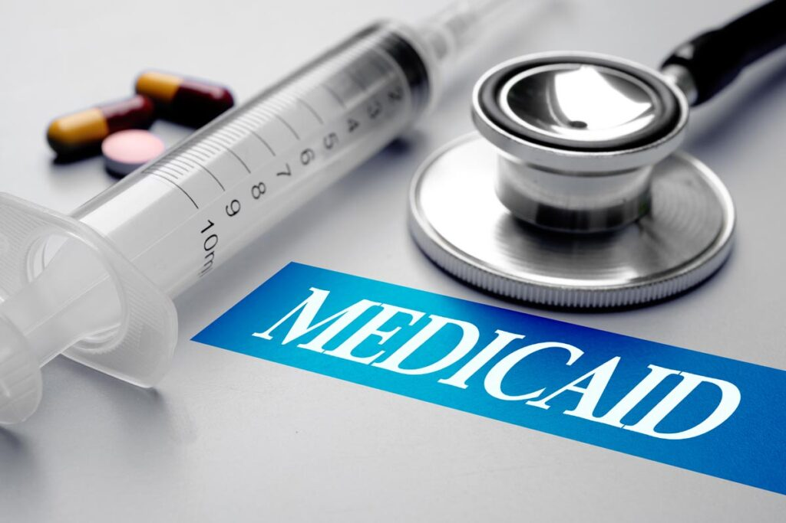

Medical bills can be a financial burden, especially when you’re not expecting them. Fortunately, there are programs in place to help individuals who are struggling with medical bills. One of these programs is Medicaid, which is a government-run health insurance program designed for low-income individuals and families.
If you’re facing unpaid medical bills, Medicaid may be able to help. But there are a lot of questions about Medicaid coverage: will Medicaid pay for past medical bills? How do I know how to submit a bill to Medicaid? Does Medicaid reimburse paid bills? Here’s how you apply for retroactive Medicaid coverage.
Consider Filing for Medicaid for Bills Up to THREE Months Old
Will Medicaid back-pay medical bills? If you’re facing unpaid medical bills, it’s important to act fast. Low-income qualifications are different from state to state, but if you qualify in your state, Medicaid may pay for bills you’ve already received, up to three months after the date of service. This means that if you’re eligible, Medicaid could cover bills from the past few months, which could help you get back on your feet financially.
Submit a Medicaid Application as Soon as Possible
How to submit medical bills to Medicaid is a common question. To submit unpaid medical bills to Medicaid, you’ll need to apply for Medicaid first. Medicaid is administered by each state. You can typically apply online, by mail, or in person through your state agency.
You can also fill out an application through the Health Insurance Marketplace. If it looks like anyone in your household qualifies for Medicaid, your information will be sent to your state agency. They will contact you about enrollment.
It’s important to submit your Medicaid application as soon as possible, as the process can take time, and you’ll want to make sure you’re eligible for coverage before you start submitting claims.
Gather Your Medical Bills and Documentation
Once you’ve applied for Medicaid, it’s time to start gathering your medical bills and documentation. You’ll need to provide proof of income, such as recent pay stubs or tax returns, as well as documentation of your medical expenses, including bills, receipts, and insurance statements. It’s important to keep track of all your medical bills, as you’ll need to submit them to Medicaid for reimbursement.
Submit Your Unpaid Medical Bills to Medicaid
After you’ve gathered your medical bills and documentation, it’s time to submit them to Medicaid. You’ll need to provide a copy of each bill, along with any documentation that shows the amount you owe. You’ll also need to include any insurance statements or payments that have already been made toward the bill. Medicaid will review your bills and determine if they’re eligible for reimbursement.
Even if You Don’t Qualify, Your Child(ren) Might
When it comes to Medicaid benefits, eligibility requirements, and eligibility criteria are important to consider, especially if you’re checking to see if you’re eligible for retroactive Medicaid health care.
If you’re not eligible for Medicaid, pregnant women and child(ren) might be. If your children need health coverage, they may be eligible for the Children’s Health Insurance Program (CHIP). CHIP provides low-cost health coverage to children in families that earn too much money to qualify for Medicaid. In some states, CHIP covers pregnant women.
Each state offers CHIP coverage, and works closely with its state Medicaid program. If you have children who need health coverage, be sure to explore your options with CHIP.
Takeaways
Submitting unpaid medical bills to Medicaid can be a complex process, but it’s an important step toward getting the financial assistance you need. Be sure to apply for Medicaid as soon as possible, gather all of your documentation, and explore all of your options, including CHIP. With a little bit of patience and persistence, you can navigate the Medicaid system and get the help you need to pay your medical bills.
Need some help crushing your medical debt? See how Crush Medical Debt can help today!
Last updated: 8-4-2023